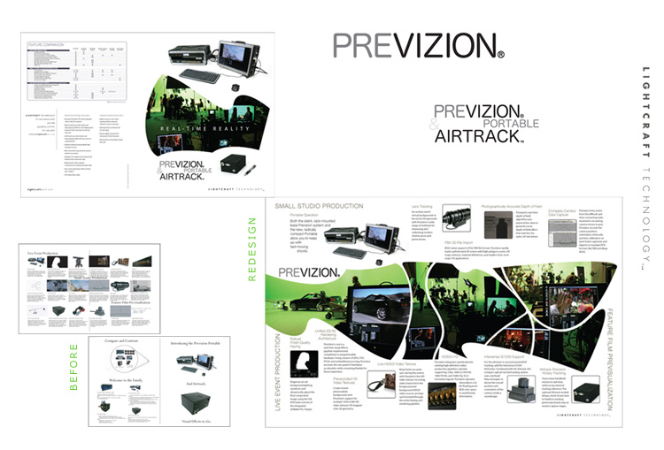
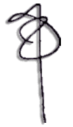

Thank you for the opportunity to talk with you today about the web developer position. Our discussion was very enjoyable and gave me a clear understanding of the projects involved.
I have always enjoyed being a part of collaborative projects and I believe that I can contribute a lot of energy and enthusiasm toward the work assigned me. I am confident that, should you decide to hire me, I am capable of taking on all of the responsibilities that this position requires, acquiring and improving new skills, and meeting challenges and deadlines in a professional manner. I look forward to hearing from you soon.
Sincerely,
Beatrice
